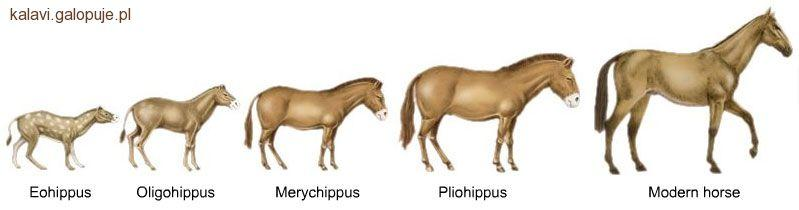
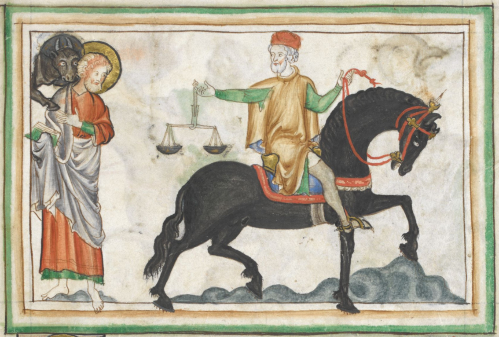
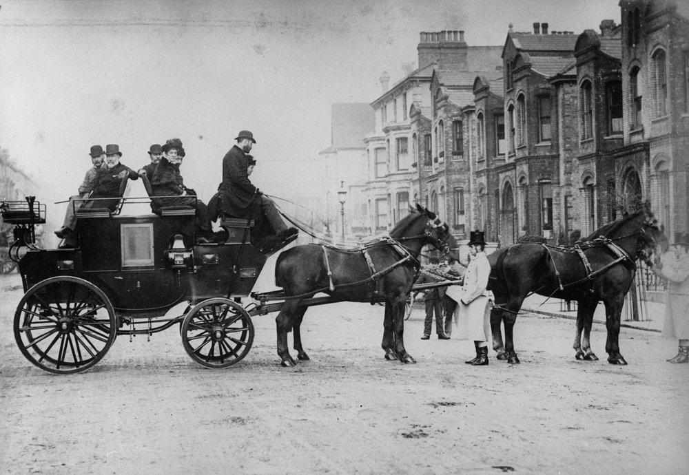
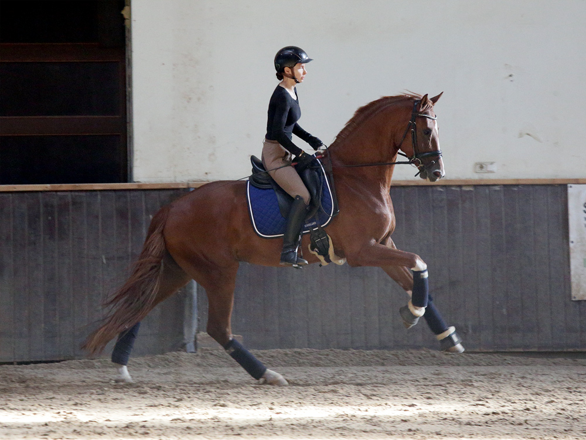
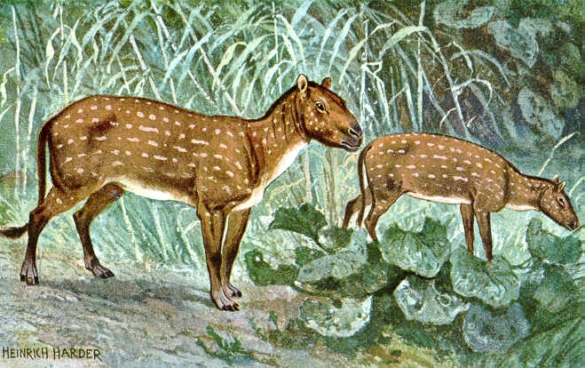
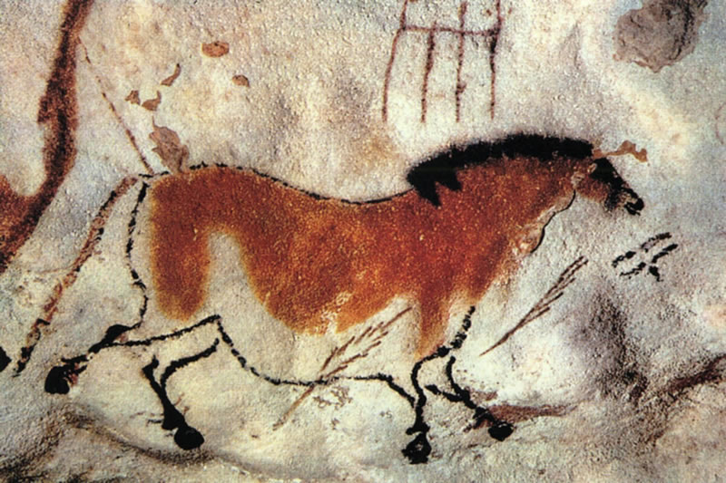
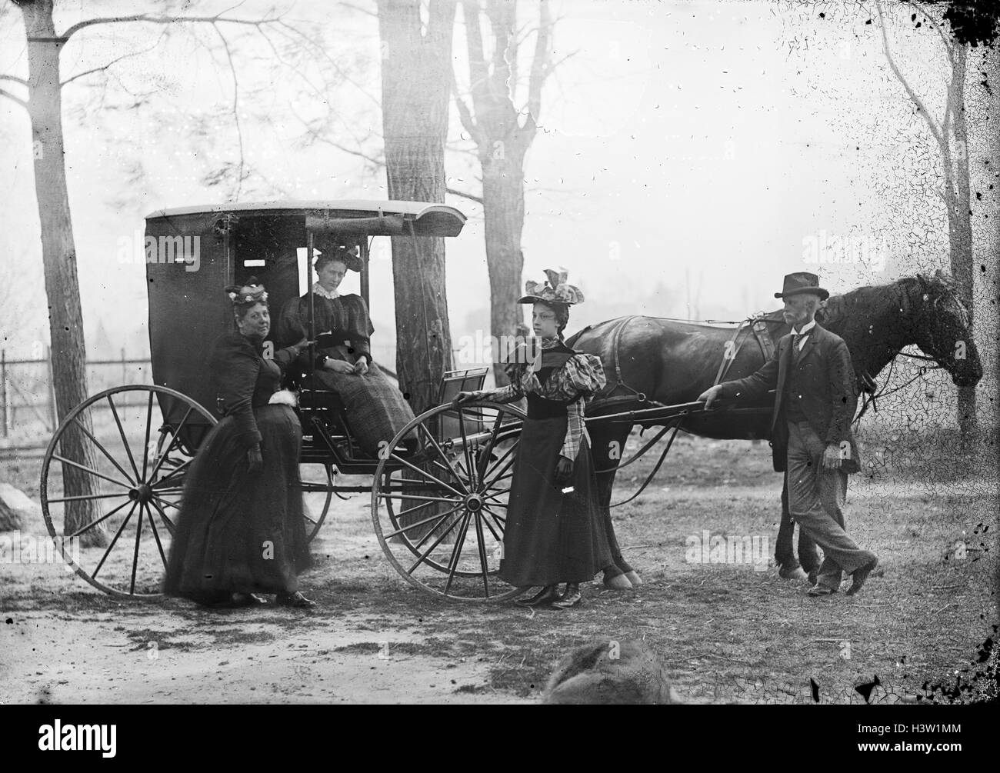
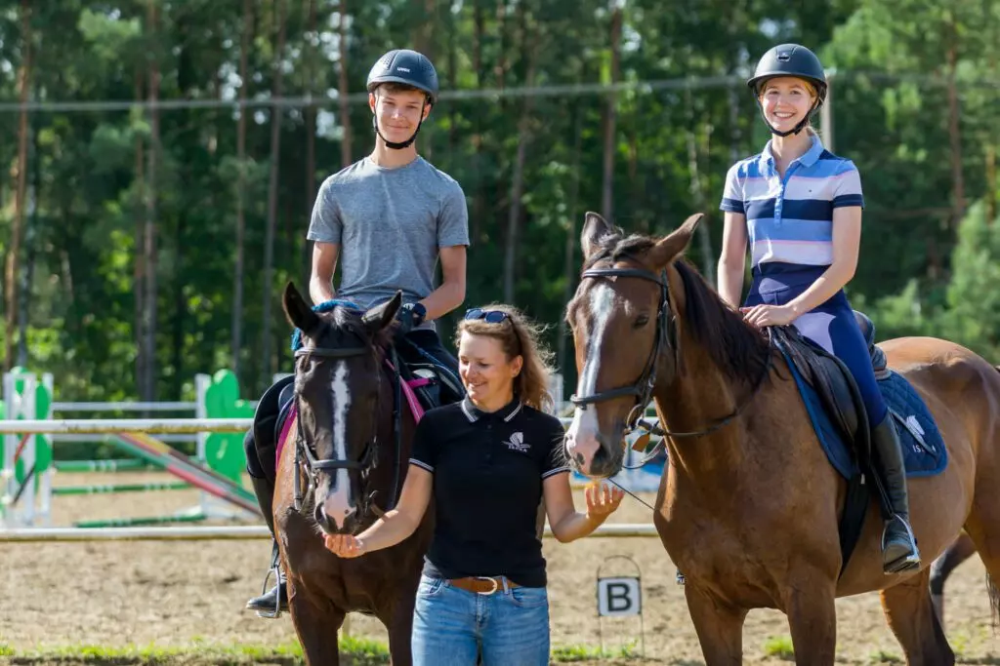

Przodkowie współczesnych koni pojawili się około 55 milionów lat temu. Były to niewielkie zwierzęta wielkości lisa,
żyjące w lasach. Przez miliony lat ewolucji konie stawały się coraz większe,
szybsze i lepiej przystosowane do życia na otwartych terenach.

Pierwsze udomowienie koni nastąpiło około 5–6 tysięcy lat temu na terenach Azji Środkowej.
oczątkowo wykorzystywano je głównie jako źródło pożywienia, jednak z czasem ludzie odkryli ich przydatność w transporcie i pracy.

W starożytności konie odgrywały ogromną rolę w handlu, komunikacji i wojsku.
Rycerze, królowie i wojownicy przemieszczali się na koniach, a kawaleria przez wieki była jedną z najważniejszych formacji wojskowych.

W XIX wieku konie były podstawowym środkiem transportu. Ciągnęły wozy, pracowały na polach i pomagały w przewożeniu ludzi oraz towarów.
Dopiero rozwój samochodów, pociągów i maszyn rolniczych sprawił, że ich znaczenie użytkowe zaczęło maleć.

Obecnie konie są wykorzystywane głównie w sporcie, rekreacji, turystyce i hipoterapii.
Nadal pomagają ludziom, ale częściej jako partnerzy i towarzysze niż zwierzęta robocze.
Więcej zdjęć




Komunikacja koni
Konie komunikują się przede wszystkim za pomocą mowy ciała.
Potrafią przekazywać swoje emocje i zamiary poprzez ustawienie uszu, ruch ogona,
postawę ciała oraz mimikę pyska.
Słuch
Uszy konia są bardzo ruchliwe i stanowią ważny element komunikacji.
Gdy są skierowane do przodu, oznacza to zainteresowanie lub zaciekawienie otoczeniem.
Odwrócone do tyłu mogą świadczyć o niepewności, strachu lub zdenerwowaniu.
Natomiast mocno przyciśnięte do głowy są wyraźnym ostrzeżeniem i mogą oznaczać gotowość do obrony lub ataku.
Dźwięki
Konie wydają różne odgłosy, które pomagają im komunikować się z otoczeniem.
Rżenie służy głównie do utrzymywania kontaktu z innymi końmi. Parskanie może oznaczać odprężenie,
zainteresowanie lub zwrócenie uwagi na coś nowego.
Kwik jest zazwyczaj wyrazem silnych emocji, takich jak zdenerwowanie, ostrzeżenie lub ekscytacja.
Ogon
Położenie i ruch ogona również wiele mówią o nastroju konia. Swobodnie opuszczony ogon świadczy o spokoju i odprężeniu.
Energiczne machanie może oznaczać irytację, zdenerwowanie lub próbę odganiania owadów.
Uniesiony ogon często można zaobserwować podczas zabawy, biegu lub w sytuacjach, gdy koń jest podekscytowany.
Dotyk
Dotyk odgrywa ważną rolę w życiu stadnym koni.
Zwierzęta często wzajemnie skubią się po szyi, grzbiecie lub kłębie, co pomaga budować zaufanie i wzmacnia więzi społeczne.
Konie wykorzystują również delikatne szturchnięcia pyskiem, aby zwrócić na siebie uwagę
lub nawiązać kontakt z innym koniem albo człowiekiem.
Zmysły koni
Konie posiadają bardzo dobrze rozwinięte zmysły, które pomagają im szybko reagować na zmiany w otoczeniu.
Ich oczy znajdują się po bokach głowy, dzięki czemu mają szerokie pole widzenia i mogą obserwować niemal wszystko wokół siebie.
Bardzo dobry słuch pozwala im wykrywać dźwięki z dużej odległości, a ruchome uszy pomagają dokładnie określić kierunek,
z którego dochodzi dźwięk. Ważną rolę odgrywa również węch, dzięki któremu konie rozpoznają inne zwierzęta,
ludzi oraz otoczenie.
Są także bardzo wrażliwe na dotyk, szczególnie w okolicach pyska i boków ciała,
co umożliwia im odbieranie nawet delikatnych sygnałów od jeźdźca.
Wszystkie te zmysły sprawiają, że konie są czujnymi i doskonale przystosowanymi do życia zwierzętami.
Ruch u koni
Konie poruszają się w różny sposób w zależności od sytuacji, prędkości oraz celu ruchu.
Ich chód jest naturalnie płynny i elastyczny, a dzięki budowie ciała mogą przechodzić od spokojnego spaceru do bardzo
szybkiego biegu.
Każdy typ ruchu ma inne zastosowanie i charakteryzuje się innym tempem oraz sposobem stawiania nóg.
Oto rodzaje chodu konia:
Stęp
Stęp to najwolniejszy i najbardziej spokojny chód konia. Jest to ruch czterotaktowy,
w którym każda noga stawiana jest osobno w regularnym rytmie. Koń w stępie porusza się stabilnie i pewnie,
co pozwala mu obserwować otoczenie i odpoczywać w trakcie marszu. Ten chód jest najczęściej
używany podczas spacerów, rozgrzewki oraz nauki jazdy konnej, ponieważ pozwala jeźdźcowi na pełną kontrolę nad koniem.
Kłus
Kłus jest szybszym chodem dwutaktowym, w którym koń porusza jednocześnie przeciwległymi nogami.
Ruch ten jest bardziej dynamiczny i wymaga większego zaangażowania mięśni. Dla jeźdźca kłus może być nieco „podskakujący”,
dlatego często wymaga nauki równowagi. Jest to bardzo ważny chód treningowy, wykorzystywany zarówno w jeździe rekreacyjnej,
jak i sportowej, ponieważ wzmacnia kondycję konia.
Galop
Galop to najszybszy naturalny chód konia o trójfazowym rytmie. Jest bardzo dynamiczny i płynny,
a koń porusza się w wyraźnych „skokach”. W galopie zwierzę wykorzystuje całą siłę mięśni,
dlatego może osiągać wysokie prędkości. Ten chód jest często wykorzystywany w jeździe terenowej,
sportach konnych oraz wyścigach, gdzie liczy się szybkość i energia ruchu.
Cwał
Cwał to ekstremalnie szybka forma galopu, w której koń osiąga maksymalną możliwą prędkość.
Jest to ruch bardzo intensywny i męczący, dlatego nie utrzymuje się go długo.
Cwał wykorzystywany jest głównie w wyścigach lub w sytuacjach wymagających szybkiej ucieczki.
W tym ruchu wszystkie kończyny pracują z ogromną siłą i synchronizacją, co pozwala koniowi na osiąganie imponujących
prędkości.